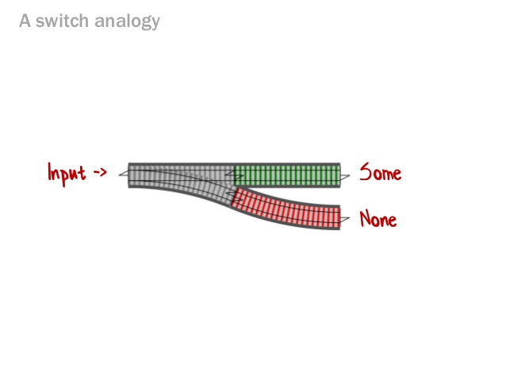
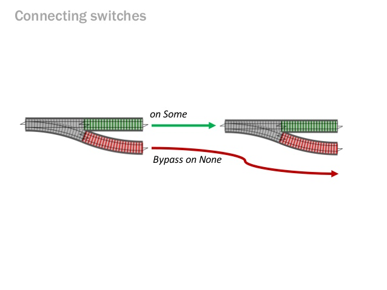
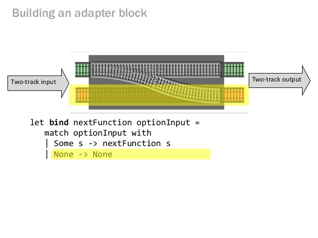

"Functors" 1/2
Picture from adit.io

Emmanuel Touzery
It has an interface named λ.
I rest my case ∎
No 'void' modifiers. Example of mutable classes: List, Map, old Date, Calendar
List newList = existing.prepend(extraCar);
Note that we now have two lists: existing is still available and unchanged, and newList is added, with the change included.
We say of a 'void' returning function that it's only side-effecting.
No more 'getters' which allow to modify your state
Mutability increases complexity by adding the dimension of time to all objects.
|
|
Key points: it's monitored, and same order of magnitude
for `1026` elements| Java mutable @ ArrayList | → 19,072 bytes |
| PCollections persistent @ TreePVector | → 56,096 bytes |
| Eclipse Collections persistent @ ImmutableArrayList | → 19,064 bytes |
| Clojure persistent @ PersistentVector | → 20,552 bytes |
| Scala persistent @ Vector | → 20,168 bytes |
| Javaslang persistent @ Vector | → 19,816 bytes |
| Javaslang persistent @ Vector | → 4,888 bytes |
| Javaslang persistent @ Vector | → 1,816 bytes |
Key points: it's monitored, and same order of magnitude
| Operation | Ratio | 10 | 100 | 1026 |
|---|---|---|---|---|
| Create | slang_persistent/java_mutable | 1.68× | 1.31× | 1.28× |
| Head | slang_persistent/java_mutable | 0.66× | 0.49× | 0.39× |
| Tail | slang_persistent/java_mutable | 0.88× | 0.48× | 0.49× |
| Get | slang_persistent/java_mutable | 0.80× | 0.41× | 0.27× |
| Update | slang_persistent/java_mutable | 0.18× | 0.06× | 0.04× |
| Map | slang_persistent/java_mutable | 2.16× | 2.37× | 2.30× |
| Map | slang_persistent/java_mutable_loop | 0.48× | 0.51× | 0.72× |
| Filter | slang_persistent/java_mutable | 1.88× | 1.94× | 1.53× |
| Prepend | slang_persistent/java_mutable | 0.11× | 0.12× | 0.23× |
| Append | slang_persistent/java_mutable | 0.04× | 0.03× | 0.02× |
| GroupBy | slang_persistent/java_mutable | 0.35× | 0.53× | 0.89× |
| Slice | slang_persistent/java_mutable | 0.63× | 0.43× | 0.45× |
| Iterate | slang_persistent/java_mutable | 0.75× | 0.30× | 0.40× |
Javaslang List doesn't inherit from java.util.List, unlike guava or Collections.unmodifiableList for instance
Picture from adit.io
|
|
Java8 has Optional, Stream, CompletableFuture
Scott Wlaschin
Scott Wlaschin
Scott Wlaschin
Optional but bettermap, flatMap, filter, sequenceTry.of turns a function returning T potentially throwing into a Try<T>map, mapTry, andThenTry, getOrElse*, sequenceEither<Throwable,T> is comparable to Try<T>map, flatMap & mapLeftmap, mapError, get, getError, sequenceFunctional and Reactive domain modeling, Debasish Ghosh, p125
mapN, _NPatterns are extracted an immediately visible, while a for loop could perform anything.
In mathematics, a
is a relation between a set of inputs and a set of permissible outputs with the property that each input is related to exactly one output.
list.map(f).map(g) is equivalent to list.map(f.andThen(g)) only if both functions are pure (free of side-effects).
Side effects: anything that depends on an external system. Filesystem, global mutable state..
You can wrap a function with another one, or compose them. Composed function are better testable (in tests and in the REPL)

getTranslationIdentifierToKey
→ calls getTranslations
getTranslations
→ calls decodeTranslationFile
→ extracts the translations
You can wrap a function with another one, or compose them. Composed function are better testable (in tests and in the REPL)
instanceOf, isInx -> x %2 == 0 || x < 0Note that Match is pushing the java8 type inference. Sometimes you must really fight the compiler and the code is sensitive on the type annotations and difficult to write.